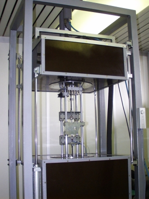

Naprava za enoosni natezni preizkus
| NAROČNIK: | Center za eksperimentalno mehaniko (CEM) - magisterij | |
| VRSTA PREIZKUSA: | Merjenje nateznega modula relaksacije E in Poissonovega števila na polimernih preizkušancih v odvisnosti od časa in temperature. | |
| NAMEN: | Enoosni
natezni preizkus Enoosna natezna relaksacija Enoosno natezno lezenje |
|
| STROJNA OPREMA: | Cirkulator
HAAKE F6-C40 Unidrive UNI 1405, Servomotor 95DSD300H, Resolver UD 53, Modul UD 70 Data Acquisition HP 3852 CCD Kamera SONY XC77 Digitaliztor videoslike Matrox Meteor-II Komunikacijski vmesnik HP82335 HP-IB Mostičkovni ojačevalec MES HPSC 3102 Carrier Amplifier PC Pentium II računalnik |
|
| MERILNA VERIGA: | Merjenje
sile izvedeno z uporovno merilno dozo Merjenje deformacij z videoekstenziometrom (opcija merilni lističi, LVDT) Merjenje temperature s PT100 |
|
| PROGRAMSKA OPREMA: | Windows
krmilni program Machine Control
(MC): mc.exe DPL program za krmiljenje servomotorja: Mcservo.dpl |
|
| LETO IZDELAVE: | 1995-2000 | |
 |